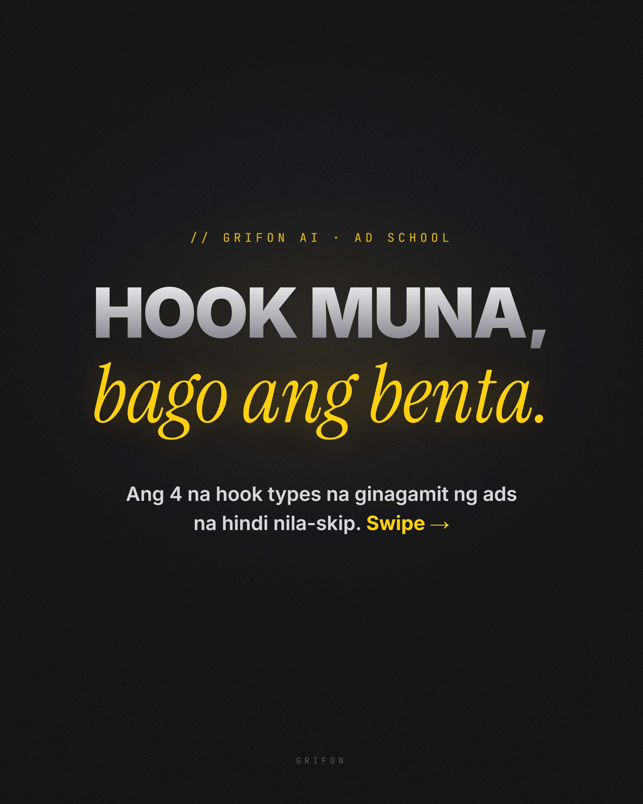
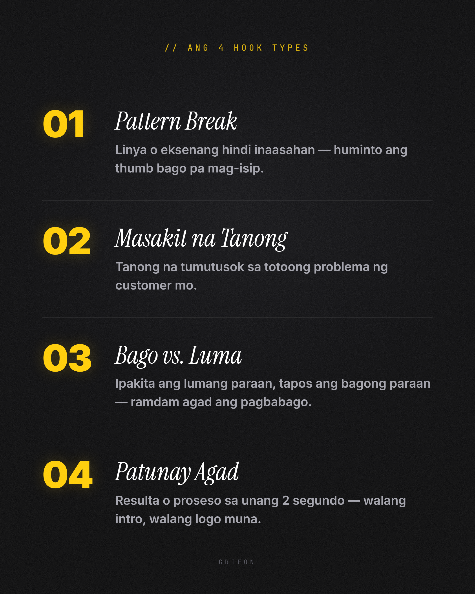

GRIFON Noir Carousel — sample carousel (Kallaway-style)
4-slide FB/IG carousel (1080×1350) sa Grifon noir system: zinc-950 + film grain (screen blend, .15),
Inter 900 gradient sans + Instrument Serif italic gold accents, JetBrains Mono eyebrows, tiny GRIFON signature.
Structure mirrors Kallaway: hook cover → numbered list → deep-dive with blur-tease stack → CTA.
New carousel = copy the 4 slide-*.html files, swap copy, then node tools/render-noir-carousel.mjs.

1 · Hook cover — "Hook muna, bago ang benta."

2 · Numbered list — ang 4 hook types
3 · Deep dive — Hook 02 + blur-tease stack (curiosity loop)
4 · CTA — Director AI bridge + gold pill (walang presyo)